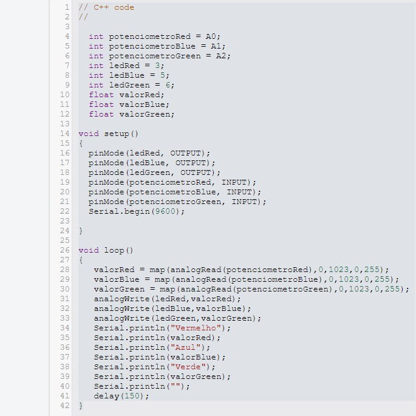

Objetivo
Controlar as cores de um LED RGB utilizando três potenciômetros, permitindo ajustar individualmente
as intensidades dos canais vermelho, azul e verde do LED, criando uma variedade de cores.
Materiais Utilizados
Arduino Uno R3 (Placa microcontroladora)
Protoboard (Realizar as conexões sem necessidade de solda)
LED RGB (Para emitir diferentes cores)
Resistores (Proteção para evitar que o LED RGB seja danificado)
3 Potenciômetros (Para ajustar as intensidades de cada canal do LED)
Jumpers (Fios de conexão)
Diagrama do Circuito
Neste projeto, três potenciômetros são utilizados para controlar os valores analógicos dos três canais
de cores do LED RGB: vermelho, verde e azul. Cada potenciômetro está conectado a uma entrada analógica
do Arduino (A0, A1 e A2), e os sinais lidos são convertidos em valores digitais para ajustar a intensidade
do LED RGB. Os potenciômetros atuam como controladores de intensidade, permitindo que o usuário ajuste as
cores de forma manual, criando uma vasta combinação de cores com base nas intensidades dos três canais.
Código Fonte & Procedimento
Código em C++ utilizando a IDE do Arduino.
Conecte o LED RGB aos pinos digitais 3 (vermelho), 5 (azul) e 6 (verde) do Arduino, cada um com seus
respectivos resistores. Conecte os três potenciômetros aos pinos analógicos A0 (vermelho), A1 (azul)
e A2 (verde) do Arduino. As leituras dos potenciômetros serão usadas para controlar a intensidade das
cores. No código, os potenciômetros são configurados como entradas analógicas, e os pinos do LED RGB
são configurados como saídas. O loop principal do código lê os valores analógicos de cada potenciômetro
usando analogRead(), mapeando esses valores (que variam de 0 a 1023) para a faixa de intensidade de cor
de 0 a 255 utilizando a função map(). Em seguida, os valores mapeados são aplicados às saídas PWM dos pinos
do LED RGB utilizando analogWrite(), ajustando assim a intensidade de cada cor. Os valores dos potenciômetros
também são exibidos no monitor serial para monitoramento em tempo real.
Resultados & Conclusão
Após carregar o código e montar o circuito, o sistema funcionou corretamente. Através da rotação dos três
potenciômetros, foi possível ajustar as intensidades dos canais vermelho, verde e azul do LED RGB. Isso
permitiu a criação de diversas combinações de cores, demonstrando a capacidade de controle analógico com
o Arduino.
Os potenciômetros forneceram uma interface simples e eficaz para controlar as cores do LED RGB. A precisão
e o tempo de resposta dos controles foram adequados para esta aplicação.